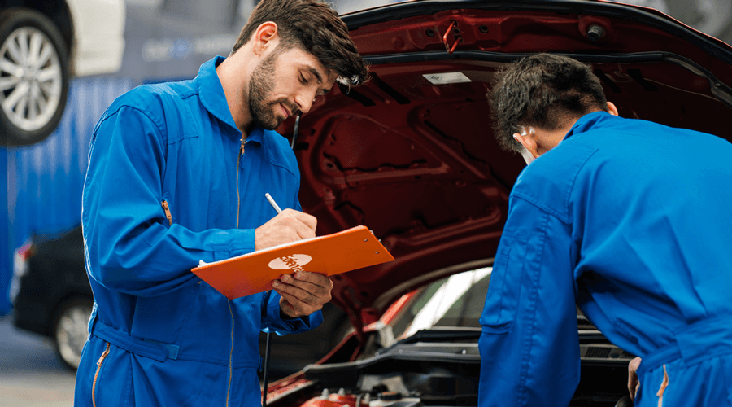

Servicio de Mantenimiento y Reparación

En AutoNova, entendemos que tu vehículo es una inversión importante y que mantenerlo en óptimas condiciones es clave para su rendimiento y seguridad. Por eso, ofrecemos un servicio de mantenimiento y reparación profesional, confiable y eficiente, respaldado por técnicos altamente capacitados y herramientas de última generación.
üîß Mantenimiento Preventivo: Cuida tu Auto y Evita Gastos Innecesarios
El mantenimiento preventivo es esencial para prolongar la vida útil de tu vehículo y evitar problemas costosos en el futuro. En AutoNova, te ofrecemos:
✅ Cambio de aceite y filtros con productos de calidad premium
✅ Revisión y ajuste de frenos para tu seguridad
✅ Alineación y balanceo para un manejo estable y seguro
✅ Diagnóstico general para detectar posibles fallas
✅ Revisión y mantenimiento del sistema eléctrico y batería
üõ†Ô∏è Reparaci√≥n Automotriz: Soluciones Rápidas y Efectivas
Si tu auto presenta fallas mecánicas, eléctricas o sufrió algún desperfecto, en AutoNova contamos con un equipo de especialistas listos para atenderlo. Ofrecemos servicios como:
✅ Reparaciones mecánicas generales
✅ Corrección de fallas en el sistema eléctrico
✅ Reemplazo y reparación de suspensión y dirección
✅ Reparación de transmisión y motor
✅ Uso de refacciones originales y de alta calidad
Servicio Ágil y Confiable
Nos comprometemos a brindarte un servicio rápido y eficiente, sin descuidar la calidad y seguridad de tu vehículo. Además, contamos con opciones de cita previa y servicio de atención express, para que vuelvas a la carretera lo antes posible.
En AutoNova, tu tranquilidad es nuestra prioridad por eso agenda tu cita hoy mismo y deja tu auto en manos de expertos.
¡Te garantizamos un servicio de mantenimiento y reparación de primera!✨
Volver a Inicio